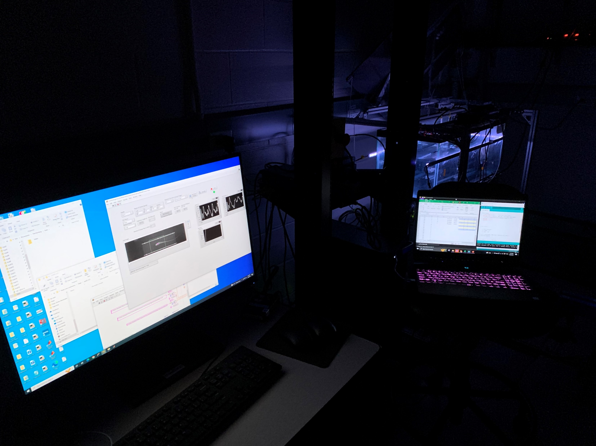

Research on Glass Knifefish Tracking Behavior
February 2021 - Present
Locomotion in Mechanical and Biological Systems Laboratory (LIMBS Lab), JHU
Research Topic:
As a research assistant at the LIMBS Lab under the supervision of
Dr. Noah J. Cowan , my work involves system identification of object tracking behavior of
Glass Knifefish (Eigenmannia virescens).
In January 2023, I presented a
poster at the SICB Conference.
Responsibilities:
Design, iterate, and conduct experiments on my own project on fish sensory integration and luminance dependence.
Analyze massive randomized trial data with MATLAB and Python.
Read and present papers on related research topics: system ID of animal locomotion through control theory.
Build a MATLAB GUI to visualize raw data, take notes, and export target data indices.
Develop a MATLAB algorithm to extract fish body image pixels from noisy background .
Skills Applied:
Signals and systems concepts, control theory
MATLAB coding: data organization and image processing
Python bject-oriented programming
Experimental design and data analysis
Comments:
I am fascinated by the intricate movement mechanics of Glass Knifefish and learned a lot of technical skills on signal processing and programming
along the way.

Experiment set-up for luminance-dependence trials.